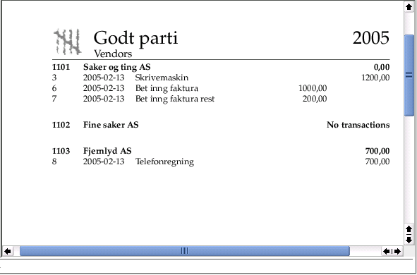
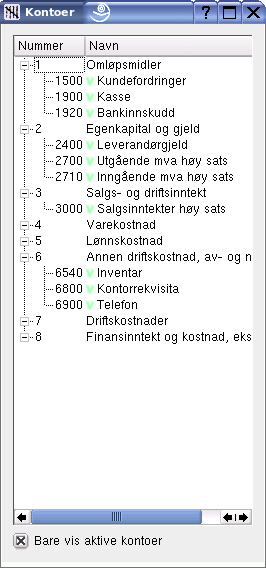
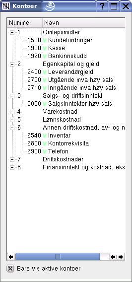

Gryn, et regnskapsprogram for GNU/Linux |
Den versjonen av programmet som er tilgjengelig nå er en alfa versjon, det vil si at den inneholder det meste av funksjonalitet, men sannsynligvis også alvorlige feil og mangler som ikke gjør det egnet til seriøst bruk ennå. For å prøve programmet kan du laste ned hele pakka her.
Gryn er, og skal være, en selvstendig enhet som skal brukes til en selvstendig oppgave: å føre regnskap. Andre bedriftsaktiviteter utføres gjerne av andre personer og til andre tider. Slike aktiviteter er derfor best tjent med egne programmer, for eksempel for lønn og fakturering.
På den annen side er det nyttig å overføre data mellom arbeidsoppgaver. Denne versjonen av Gryn kan importere data fra et fiktivt faktureringsprogram. Fakturaopplysninger legges i kø i databasen og hentes inn i Gryn under bokføringen. Fakturaene føres så automatisk inn i regnskapet. Faktureringsprogrammet er tenkt å bruke samme database som Gryn slik at for eksempel opplysninger om kunder deles.
Når dialogen for nytt bilag åpner er øverste felt merket Kunde/leverandør. Dette feltet er koblet til et regulært uttrykk, det vil si at man bare trenger å skrive del av kunden eller leverandørens navn for å finne det riktige. Bilagsteksten er vanlig fritekst. I dette tilfellet er det ingen regler, men de kan evt velges med nedtrekksboks.
Tabellen med uoppgjorte fakturaer aktiveres dersom en kunde eller leverandør velges. Her kan en av fakturaene klikkes på, restbeløpet overføres da til første linje i posteringslista under, enten som reduksjon av kundefordring eller leverandørgjeld. Beløpet i posteringslista kan redigeres dersom ikke hele restbeløpet betales.
Manuell føring av postering skjer ved å fylle inn enten kontonummer eller kontonavn. Kontonavnfeltet er også tilknyttet et regulært uttrykk, det er bare nødvendig å skrive litt av kontonavnet for å få fram det rette. Rett over posteringslista vises kontoens vanlige mva-kode. Den kan evt endres for den enkelte postering. Her kan det også velges om oppgitt beløp er nettobeløpet eller inkluderer mva. Mva-beløpet beregnes og posteres automatisk.
Ubalansen mellom debet og kredit oppdateres kontinuerlig under innskrivning av posteringer. Dersom avrund-knotten klikkes opprettes en postering for overføring til øreavrundingskonto. Dersom det allerede er valgt en konto på siste posteringslinje blir derimot bare ubalansebeløpet overført til denne linjens debet eller kreditfelt.
Hvis reskontro-knappen trykkes lages en postering til kundefordring eller leverandørgjeld med et beløp lik ubalansen.
Brukeren kan åpne et vindu som viser kontoplanen. Klikkes på en av kontoene i planen blir kontonavn og nummer automatisk overført til aktiv posteringslinje. Tilsvarende vinduer er det også for kunder og leverandører. Klikk på en av dem fører også til automatisk innskriving i kunde/leverandørfeltet.
Det er mange posteringstyper som går igjen under bokføringen, for eksempel varesalg, lønn og arbeidsgiveravgift. Slike faste føringer kan automatiseres med regler. Dialogen til venstre viser et eksempel på hvordan en regel defineres. Regelnavn er det navnet vi finer regelen ved i komboboksen i bilagsdialogen. Standardtekst er den teksten som settes inn i bilaget.
Videre kan vi definere et antall parametre. Venstre kolonne er parameternavnet som det brukes internt, høyre kolonne er det navnet som kommer fram i dialogen når regelen brukes. Den midtre kolonnen angir om parameteren er et vanlig tall eller er et beløp.
Preludium er Pythonkode som kan brukes til beregninger som gjøres før posteringene lages. Nederst kommer en tabell for posteringer. Her skrives kontonummer, hvilken side posteringen skal til (Debet eller kredit) og en beregningsfunksjon. Funksjonen er igjen vanlig Pythonkode. I eksempelet er det bare aritmetiske kombinasjoner av variable definert ovenfor.
Når denne regelen brukes blir dialogen som vist til høyre, brukeren blir bedt om å skrive inn verdien på parametrene som ble definert. Deretter klikkes OK og posteringene skrives inn i bilagsdialogens posteringsliste.
Mange bokføringsprogrammer kan automatisk generere regler ved å analysere allerede førte eksempelbilag. Den måten Gryn tilbyr for å definere regler er mer arbeidskrevende, men gir presis informasjon om hva systemet gjør. Automatisk genererte regler er alltid forbundet med noe mer diffust.

Bildet viser oversikt over de første bilagene for regnskapet til Godt parti. Bilag nummer 0 og 1 brukes til overføring mellom år, vanligvis er den automatiske overføring korrekt og bilag 1 et tomt. Overføring mellom år skal kunne skje flere ganger og til vilkårlig tidspunkt etter nyttår. Bilag 3 viser et eksempel på en transaksjon som går over flere bilag. Bilag 3 er føringen av fakturaen, bilag 6 og 7 gjelder betaling av den i to porsjoner. Som vi ser er ikke rapport tekster oversatt til norsk ennå.

Dette eksempelet viser reskontro for noen få leverandører til firmaet Godt parti. I dette eksempelet er alle bilag med, man kan også filtrere opplysningen som inngår i rapporten, for eksempel bare de med åpne poster og evt bare med sammendrag.
Trykk på skriverikonet gir utskrift på papir. Utskriften blir litt annerledes, se figuren under. Logoen kan velges til det aktuelle firma sitt, eller standard Gryn-logo som vist. Sidene merkes med utskriftsdato, side nr og evt 'siste side'.

 

Her er et eksempel på kontoplanvindu. Kontoplanen vises med trestruktur. De konti som er i bruk i regnskapet er markert med grønn hake. Til høyre vises samme kontoplan, men her vises bare de kontiene som er i bruk. Innholdet i vinduet oppdateres dersom et kontonavn/nummer redigeres eller legges til/slettes i kontoplanredigeringsdialogen. Hvert klikk sender et signal med en instans for kontoen som klikkes på. Dette signalet kan evt fanges opp i andre deler av programmet og brukes til noe nyttig der.
Brukergrensesnittet er implementert med Qt-biblioteket som finnes i de fleste moderne Gnu/Linux distribusjoner. Python og biblioteket er limt sammen med PyQt/sip.
For utskrift av rapporter brukes LaTeX. Basismakroer er ferdige slik at det er enkelt å skrive nye makroer for nye rapporttyper.
| Copyright 2005 Odd Arild Olsen |